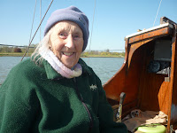

{kind=link}
{kind=link}
{kind=link}
{kind=link}
{kind=link}
I watched Peter Duck being lowered those final few inches back into the Deben. I heard her sigh with relief as she settled into the water where she belongs. Her own weight, which had been supported by four rigid cradle struts through the eighteen months she’d spent ashore, was now dispersed across her underwater surface, the river pushing her up as gravity and the weight of her own superstructure pulled her down. Aaaah… It was like sinking into a sofa at the end of a long day, kicking off tight shoes and letting the shoulders slump. Aaaah… As the thick webbing slings from the crane were loosened, it was like undoing the top button of a too-tight waist band. Aaaah… as I stood deliberately alone on the pontoon, watching that final return to her element, I sighed too. A piece of my soul was back where it belonged.
Soul is a
difficult word to use here. I experimented with ‘being’, ‘pysche’ and ‘self’ but none of
them quite worked. It’s difficult, anyway, to analyse how I feel about PD. It is
an oddly tangible love which I believe I am explaining quite accurately when I
simply say Aaaah… and ask you to accept that something fundamental fitted
back in place in my self when Peter Duck returned to the water last week.
Silly isn’t it? She’s only a boat and this most recent period of her existence has focused harshly on her material nature. Matt Lis, the boatyard manager who has directed this project like a maestro, recently sent me 192 work-in-progress photos which show the gritty stages of dilapidation and repair. They're not beautiful at all. Dislocated wood and metal. Holes.
The process began more than a year ago with PD's regular five year survey
(stretched to six through the intervention of that-which-shall-not-be-named). Surveyor Adrian Overbury who has known her for
almost quarter century and has an inherited position in her life was impelled to comment that there was an area underneath her main mast which ‘required
investigation’. As I’d been consciously averting my eyes from that same area
for almost all of the 25 years, I knew I had to agree and asked Matt and his team to get probing. This is part of what happened next:
PD’ was found to have
extensive rot under her main mast tabernacle and around her cabin front which
was undermining her structural integrity. As a result, two of ‘PD’s forward
deckbeams, sections of her beamshelves, part of her cabinfront, her tabernacle
pads, a section of her foredeck and sidedecks, and the forward part of her port
and starboard carlins needed to be replaced. In the case of her port carlin
where rot was also prevalent further aft the decision was made to replace its
full length. With beams and carlins replaced in sawn oak, her deck was
reinstated with ply on larch and glassed to match the rest of her decks.
That was
just for starters. I’d also be avertin my eyes from the parlous state of her stanchions
(metal posts that fit to the deck and hold up the guard rails). Paul, the shipwright who was leading the restoration took to his saw and
amputated ¾ of the length of her bulwarks. I knew he was right (and he had consulted) but the utter
thoroughness of the process began to feel like booking in for grommets and waking up to find oneself legless.
There was
also the little matter of cost. Peter Duck is not a thing bolted together from
mass-produced parts, she is a uniquely constructed artefact (as well as being
part of my soul!) so she requires the artistry of skilled craftsmen. If I’d
actually woken up without my legs, someone in the NHS would have
fitted me with prostheses but they would have rubbed my stumps and made me cry and
would never have been equivalent to my own former limbs. I wish you could have observed
the experience and tenacity with which Paul bent PD’s new Siberian larch
bulwarks round to meet the old and splined them together with no join in sight.
They are better than the old ones. In this as in so many ways she has returned to the river more robust - and more lovely - than
before. I wish you had seen the Nelsonian plank of oak which Matt drove to Birmingham to buy and which drove him home down the motorway dominating his trailer and van. Paul cut beams and a carlin from it, possibly stronger than the original timbers (though Harry King, her original builder, was a canny man who had kept some seasoned timber tucked away, even from the eyes of the Admiralty.)
When Harry King built Peter Duck in 1945-6 good quality material was expensive and hard to find: labour was comparatively cheap. Highly skilled shipwrights, like Paul, were not cherishable rarities as they are now. How was I going to afford the expertise as well as the stuff which Peter Duck was going to need to set her up for her next quarter century?
Aaaah… Is our final act on earth an exhalation? I don't know. When my mother died, I was beside her on a sofa but dozing, my head pillowed on the edge of her bed. All I realised was the absence. ‘Ned,’ I said to my brother, who was on a mattress on the floor, ‘Do you think Mum’s stopped breathing?’ He listened but there wasn’t anything to hear.
That was December 2018. Sadness and readjustment took time. Money wasn’t considered. The fees for a dementia nursing home are not dissimilar to boatyard intensive care -- though considerably less finds its way to the people who earn it. I assumed there was no money left. Ned, as executor, burrowed around as was his duty. Then, sometime in March 2021, within a fortnight of PD’s diagnosis, he shared the astounding news that there was a trust left by our grandfather that had somehow remained untouched. My sigh of relief was like a gust from those chubby cherubs you see blowing the winds from the corners of an old-fashioned chart.
Mum had
co-owned Peter Duck, loved her, done her best to keep her in good
condition after Dad died. Then there’d been an eviscerating day when she’d
taken PD away from the boatyard, down the river to Waldringfield, picked up the
mooring, furled sails, turned off the engine (or whatever she did) and went
down into the cabin – to find it empty. All of us were gone. Poor
mum. I was so preoccupied with my own affairs I knew nothing of this story
until years later. I scarcely found time to mourn that she'd sold 'our' boat.
When Francis
and I repurchased Peter Duck on her return from Russia in 1998 Mum gradually
reconnected. We had some extraordinarily good times quite late in her dementia when
she was entering her 90s, still living in Woodbridge and just about able to be
pushed on board by me. We had some scary moments
when she’d get stuck half way on the ladder up PD’s side, with me shoving her bottom from the dinghy or she'd be lying flat on her tummy on the Everson’s pontoon with passers-by looking shocked.
Actually there was always some wonderfully kind person who materialised to help. And when she was on board, it regularly amazed
me how her body could remember where the handholds were, though her mind was a
near-total mess.
 |
| June Jones on Peter Duck aged 91 |
{kind=link}
Anyway, Mum's amazing treasure chest has funded PD's new lease of life. And when I'm on board on my own the cabin is never empty at all. It's so crowded with ghosts that the living are almost superfluous. It's not a particularly filial thing: all sorts of people turn up. The Ransomes are somewhat large and gloomy guests; Horatio Hornblower and the lovely Lady Barbara add a glamourous frisson, from all those hours Dad read their flirtations across the bridge table. My brothers and I are there playing crocodiles as children; Greg Palmer who took her to Russia and made such significant improvements to the comfort of her cabin. Donny, Skye and Gold Dragon from The Salt-Stained Book tell stories in the evening and many of the craftsmen who had worked on board have left traces of themselves. This time shipwright, Andrew Frabjis, renewed the apple wood fairlead linings that his father made 22 years ago. It was reassuring to hear that he borrowed the turning lathe from his son. So perhaps in another 22 years....
The next stage of Peter Duck's return to the river wasn’t maudlin at all. As soon as that great Aaaah... moment of her settling, duck-like, into the water had happened, she needed to breathe in. Specifically, her wood, that had been so dry on land, needed time to take in water and swell, so that the seams (gaps between planks) would close up tightly. As I watched from my pontoon, dealing with my emotion, Matt and the team started tipping buckets of sawdust into the water closest to her hull. They had brooms and brushed it wildly against her. Passers by wondered whether they had gone mad. The idea is that for those first moments that the timbers are breathing in, there should be dry sawdust sucked in too. The particles get stuck in the seams, take in water and swell, blocking the flow. It only works (if it does) in those first moments when the river is actively being drawn into the boat.
I moved round to watch more closely. Matt and the team began hauling up buckets of river water, chucking them over the decks and brooming them in to give that parched wood a salty sousing and clean her from the dust of the yard and again . I began to see them as comically old fashioned midwives, wetting the baby’s head and slapping its bottom to make it bawl and ensure its lungs were in full working order. Paul, who was doing a few final jobs below, yelled as some of their bucketfuls came through to him.
A few days later I had my first night on board. It was cold and the wind was coming straight up the river and through the cabin doors. My feet were wet and there were no spare socks. I'd brought some leftover curry to eat in my bunk but had forgotten utensils. As I put on an extra jersey and settled down for the night, the rain began drumming on the decks. That beautiful new oak carlin wasn't quite bedded in and I soon felt drops on the port side of my face. Aaaah... I sighed, nostalgically, and pulled the sleeping bag over my head.
{kind=link}